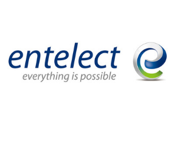

Department of Computer Science
COS 301 Capstone Project's 2021 Landing Page
CS Project Day
@UP
Sponsor's
About
Product Owner:
By
GitHub Repository
Email
Website
Video
Sponsor's
We would like to thank our Sponsors for this years prizes. Thank you for your continued support.
